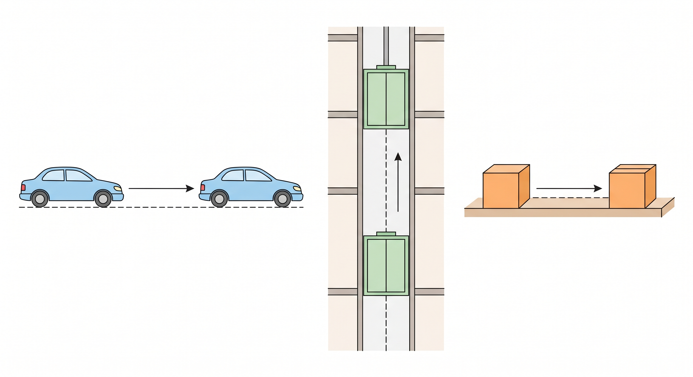
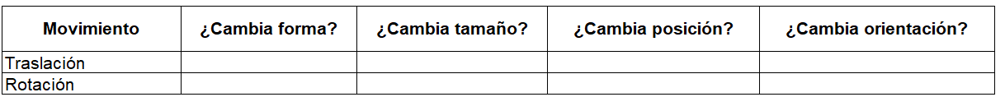

7°
EXPLORACIÓN
Situación 1: Observa y piensa
Imagina que dibujas un cuadrado en tu cuaderno y luego lo vuelves a dibujar un poco más a la derecha sin cambiar su forma ni su tamaño.
- ★¿Qué cambió en la figura?
- ★¿Qué crees que se mantiene igual?
- ¿Cómo describirías ese cambio con tus palabras?
Situación 2: Movimiento en el entorno
Observa los siguientes ejemplos de la vida cotidiana:
- Un carro que avanza en línea recta.
- Un ascensor que sube o baja.
- Un objeto que se desliza sobre una mesa.

Responde:
1. ★¿Qué tienen en común estos movimientos?
2. ★¿Cambian de forma los objetos cuando se mueven?
3. ¿Qué tipo de desplazamiento observas: horizontal, vertical o ambos?
Situación 3: En el plano del cuaderno
Dibuja en tu cuaderno:
Paso 1: Marca un punto A en cualquier lugar.
Paso 2: Marca otro punto B moviéndote 3 cuadritos a la derecha.
Paso 3: Marca un punto C moviéndote 3 cuadritos hacia arriba desde A.
Responde:
- ★¿Qué diferencias notas entre los movimientos de A a B y de A a C?
- ¿Cómo podrías describir cada movimiento?
ANALIZA
Situación 4: Compara movimientos
Observa dos dibujos de una misma figura:
- En el primero, la figura se mueve hacia la derecha.
- En el segundo, la figura parece girar sobre un punto.
Responde:
1. ★¿En cuál caso la figura cambia su orientación?
2. ¿En cuál caso la figura conserva exactamente la misma posición de sus lados?
3. ★¿Cómo describirías la diferencia entre ambos movimientos?
Situación 5: Piensa y argumenta
Observa una figura que se mueve en el plano:
- Antes del movimiento
- Después del movimiento
Responde:
1. ¿Cómo podrías verificar si la figura sigue siendo la misma? ★
2. ¿Qué aspectos podrías comparar (forma, tamaño, posición)? ★
3. ¿Qué crees que puede cambiar y qué no?
Situación 6: Reflexión inicial
Completa la siguiente idea con tus propias palabras:
★“Cuando una figura se mueve en el plano, puedo notar que…”
📘 CONOCE ALGO NUEVO: MOVIMIENTOS EN EL PLANO
Una figura geométrica puede moverse en el plano sin dejar de ser la misma figura. Los movimientos que mantienen la forma y el tamaño se llaman isometrías.
1. TRASLACIÓN
Es el desplazamiento de todos los puntos de una figura en una misma dirección, sentido y distancia.
Idea clave: La figura cambia de posición, pero conserva su forma, tamaño y orientación.
Ejemplo Paso a Paso
Punto inicial: A(2, 3)
Movimiento: +3 derecha, +2 arriba
Resultado: (2+3, 3+2) = A'(5, 5)
2. ROTACIÓN
Es el giro de una figura alrededor de un punto fijo llamado centro de rotación.
Idea clave: Mantiene forma y tamaño, pero cambia la orientación de la figura en el espacio.
Ejemplo Visual
Rotación de 90° en sentido antihorario.
Centro: C(4, 2)
Observa cómo la base de la figura, que inicialmente es horizontal, se vuelve vertical tras el giro exacto.
TABLA COMPARATIVA
| ¿Cambia la figura en...? | Traslación | Rotación |
|---|---|---|
| Su forma y tamaño | NO | NO |
| Su posición | SÍ | SÍ |
| Su orientación | NO | SÍ |
Idea Clave: En ambos movimientos, la figura resultante es congruente a la original; es decir, mantienen exactamente las mismas medidas.
ACTIVIDADES DE APRENDIZAJE
1. Traslaciones en el plano cartesiano
Ejercicio 1 (Nivel esencial ★)
Dibuja en tu cuaderno un punto A(2, 3).
Realiza la siguiente traslación:
- 4 unidades a la derecha
- 1 unidad hacia arriba
Paso 1: Calcula la nueva coordenada en x
Paso 2: Calcula la nueva coordenada en y
Paso 3: Escribe la nueva posición
¿Cuál es la nueva coordenada de A? ★
Ejercicio 2 (Nivel esencial ★)
Dibuja el triángulo con los siguientes puntos:
A(1,1), B(3,1), C(2,3)
Realiza la traslación:
- 2 unidades a la derecha
- 3 unidades hacia arriba
1. Escribe las nuevas coordenadas de cada punto ★
2. Dibuja la nueva figura
3. Compara ambas figuras
¿Qué cambia y qué se mantiene igual? ★
Ejercicio 3 (Nivel intermedio)
Observa una figura que se traslada:
- Punto inicial: D(4,2)
- Punto final: D′(7,5)
1. ¿Cuántas unidades se movió en horizontal?
2. ¿Cuántas unidades se movió en vertical?
3. Describe el movimiento realizado
2. Rotaciones en el plano
Ejercicio 4 (Nivel esencial ★)
Observa una figura que gira alrededor de un punto.
Responde:
1. ¿Qué elemento permite identificar el giro? ★
2. ¿La figura cambia de tamaño? ★
3. ¿La figura cambia su orientación? ★
Ejercicio 5 (Nivel esencial ★)
Dibuja una flecha apuntando hacia arriba.
Ahora realiza un giro de 90° hacia la derecha.
1. Dibuja la nueva posición ★
2. Describe con tus palabras qué ocurrió ★
Ejercicio 6 (Nivel intermedio)
Observa una figura antes y después de un giro de 180°.
1. ¿Cómo queda la figura después del giro?
2. ¿Qué dirección tenía antes y cuál después?
3. Explica cómo sabes que fue una rotación
3. Comparación de movimientos
Ejercicio 7 (Nivel esencial ★)
Completa la tabla en tu cuaderno:

Ejercicio 8 (Nivel intermedio)
Observa dos situaciones:
- Una figura se desplaza en línea recta
- Otra figura gira sobre un punto
1. ¿Cuál corresponde a una traslación?
2. ¿Cuál corresponde a una rotación?
3. Justifica tu respuesta
4. Aplicación en contexto
Ejercicio 9 (Nivel esencial ★)
Observa tu entorno (colegio o casa):
1. Identifica un ejemplo de traslación ★
2. Identifica un ejemplo de rotación ★
3. Describe cada uno
Fuentes bibliográficas
Ministerio de Educación Nacional – MEN. Estándares Básicos de Competencias en Matemáticas. Bogotá, Colombia, 2006.
Ministerio de Educación Nacional – MEN. Derechos Básicos de Aprendizaje (DBA) – Matemáticas, grado séptimo. Bogotá, Colombia, 2016.
Ministerio de Educación Nacional – MEN. Vamos a aprender Matemáticas 7. Bogotá, Colombia.
Colegio Integrado Simón Bolívar. Plan de asignatura Geometría grado 7°.